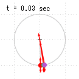
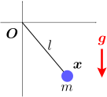
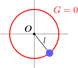
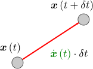
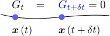
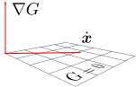
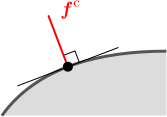
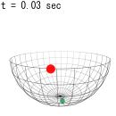
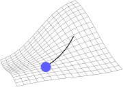
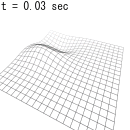

6.振り子

振り子のように、拘束された物体の運動
を計算するには、運動方程式(
)を解くことになる。その際、初期位置
と初期速度
は、拘束条件(
)を満たさなければならない。拘束力
は、公式(
)で与えられる。
この章のシミュレーション（クリックで計算開始）：
初期値 に対する拘束条件と、拘束力 が知りたい

振り子のおもりの運動
が知りたい（右図）。そのためには、運動方程式：
を具体的に書き下せばよい（
は重力
、
は拘束力）。運動方程式が分かれば、第2章に議論に従って、初期位置
および初期速度
のもとで、
が計算できる。未知の量は、拘束力
だけなので、
を導出することが目的となる。

ただし、初期値
は、
これまでのように自由な値を取れるわけではない。実際、振り子の場合、拘束条件として、「原点からの距離がひもの長さ
に一致する」
（右図）：
という条件がかかるので、おもりの初期位置
も、この条件
を満たさなければならない。一方、初期速度
についではどうだろうか。式(
)には速度は含まれていないが、だからといって
を自由にとれるわけではない。実際、ひもが伸びたりたるんだりしてはならないので、
はひもと垂直になる必要があることが、直感的に分かるだろう。この条件を理論的に導く方法を考えたい
（結論から言うと
である）。
よって、
を実際に計算するために必要となるのは、初期値に対する拘束条件の導出と、拘束力
の導出である。これらを踏まえて、この章では、以下の3つの節に分けて議論を行う：
初期値に対する拘束条件拘束力の導出物体の運動の計算
なお、拘束条件を表現する方法として、式()のように
と表す以外に、極座標などのパラメータ表示を用いる方法も考えられる（第9章で扱う）。
6.1初期値 に対する拘束条件
この節では、初期値
が満たすべき拘束条件(
)を導出する。
初期値 に対する拘束条件：式()
拘束条件
は、位置
に対する条件である。

一方、速度
は、拘束条件の中には含まれていない。しかし、冒頭でも述べたように、任意の
を取れるわけではない。拘束条件から、
に対する条件を引き出すにはどうすればよいだろうか。まず、
はもともと、
秒後の位置
の1次近似（右図）：
から出てきた量であった（第1章の1.1節）。よって、
に対する拘束条件は、「
秒後にも拘束条件
が破れないこと」を要求すれば得られるはずである。

まず、おもりの位置
における
の値は、時間変化する
を通して時刻
の関数
になっている。これを
で表すことにする：
。すると拘束条件は、時刻
においても成り立たなければならないので、
となる（右図）。
は、1次近似により
と書ける。時刻
においても拘束条件
が常に成立するためには、右辺の
がともにゼロでなければならない。
は、もともとの拘束条件そのものであり、速度
に対する条件にはなっていない。よって、もう一方の
に着目する。

式(
)において、微分の連鎖律
（第4章の【4.1-注3】において
を
としたもの）により
を括り出すことができ
となる。これは確かに
に対する拘束条件になっている。
は拘束面に垂直なベクトル（右図）なので、この式は、
が拘束面上にあることを意味しておりもっともらしい（振り子の場合は
がひもと直交していることを意味している）。なお、第3章の3.2節でも述べたように、
となるように
をとっているものとする。
以上をまとめると、
は以下の拘束条件を満たさなければならない：（これ以降、
の添え字
は省略する）
従って、初期値
もこの式を満たすようにとっておく必要がある。（2階微分
も新しい条件を与えそうな気がするが、すぐ次節で見るように、これには加速度が含まれ、初期値ではなく拘束力に対する条件になる。）
6.2拘束力 の導出
この節では、拘束力
の具体的な式(
)を導く。拘束条件(
)とダランベールの原理(
)を課せばよい。
拘束力 を決定する式：拘束条件()とダランベールの原理()
初期値
に対する条件が分かったので、後は拘束力
の導出である。
が、式(
)
を満たしている時、その後も拘束条件
を満たし続けるためには、任意の時刻で
が成り立てばよい。
（分かりにくければ次のアナロジーを考えるとよい：初期位置・初期速度
が
で、それ以降の加速度
も
であれば、位置
は
のままである。
を
に置き換えればよい。）
式(
)は、式(
)の第2式をもう一度微分したものであり、加速度
を含む条件式になっている。その式に、運動方程式
を代入して
を消去すれば、拘束力
に対する条件が得られる。しかし、
はベクトルなので、式(
)の1つだけでは完全には決まらない。しかも、式(
)さえ満たしていれば拘束条件は満たされるのだから、拘束条件からはこれ以上の条件は出ない。よって、
を決めるためには、物理的な条件を加える必要がある。

その条件は既に分かっている。即ち、第3章の3.1節で述べたダランベールの原理「拘束力
は拘束面に垂直になる」である（右図）。これにより、
と
は平行となるので、未定乗数
を用いて、
は以下のように書ける：
振り子の場合には、
がひもと平行になることを意味しており、もっともらしい。
拘束力 を与える公式：式()
以上で、必要な条件が出そろった。ダランベールの原理(
)の未知数は
だけなので、拘束条件(
)
（と運動方程式）を用いることで、
が求まり拘束力
が決まる。これを実際に計算すると、
は、以下の【6.2-注1】の式(
)のようになる。
この結果は、一般的な拘束条件においても成り立つ（振り子に特有の性質は使っていない）。
これにより、運動方程式
も、確定する。
なお、運動方程式は、力を、「拘束面に垂直な成分」と「平行な成分」に分けると、以下のようにも書ける：
右辺第1項は、外力
を拘束面に正射影したものになっており、これが拘束面と平行な成分となる。同第2項は、
方向を向くので、拘束面に垂直な成分である。導出は、運動方程式
に式()を代入した後、
を第1項にまとめればよい。
【6.2-注1】拘束力 の公式()
拘束条件
が課せられている時、拘束力
は以下のようになる：
は重力などの外力（＝拘束力以外の力）である。
導出
まず、運動方程式にダランベールの原理(
)を代入すると
となる。後は、この式が拘束条件の2階微分(
)を満たすように
を決めればよい。
を実際に計算するには、式(
)の第2式
をもう一度微分すればよい：
（以下の【6.2-注2】において
としたもの。）式(
)を式(
)に代入して
を消せば、
に対する方程式になる。これを解くと、式(
)の
に一致する。
【6.2-注2】積の微分公式
時刻
に依存する2つの行列
に対し、それらの積
の微分は以下のようになる：
導出
求める微分は、
を1次近似した時の
の係数（以下の赤字部分）である：（時刻を省略した右辺の項は
での値）
6.3物体の運動 の計算
以上で、必要な議論がそろった。この節では、拘束条件
がある場合の運動の計算方法についてまとめた後、具体的な例として、冒頭で述べた「振り子の運動」と「ゆがんだ床の上を滑る運動」を扱う。
物体の運動 の計算
拘束条件
によって拘束された物体の運動
を計算するには、以下のようにすればよい：
- その後の時刻
での位置
は、運動方程式
から計算できる（運動方程式の解き方は第2章と同じである）。ただし、拘束力
は式()で与えられる。
【例題】振り子：初期条件()、運動方程式()
右図の振り子の運動を計算する。拘束条件
およびその微分は以下のようになる：
（
の導出は第3章の【3.3-注1】。）
これらを用いると、初期値
に対する拘束条件(
)は
となる。拘束力
についても、式(
)に代入することにより以下が得られる：
振り子の運動方程式を得るには、
に、上式(
)と重力
を代入すればよい：
（第9章の9.2節で、この方程式を極座標で書き直す。）あるいは、式()のように、外力
をまとめれば、「拘束面に平行な成分」と「垂直な成分」に分離できる：

運動方程式(
)は、2次元・3次元の両方で成り立つ。実際に数値計算を行うと、右図のようになる。
赤矢印は、重力と拘束力である。円・球の半径はともに
である。
【例題】 のグラフ上の運動

次に、もう1つの例として、3次元空間内のグラフ
で表される曲面上におもりを拘束する場合を考える。拘束条件は
とすればよい。
の微分は以下のようになる：（赤字部分では以下の【6.3-注1】の連鎖律を用いた）
なお、
と
は、偏微分の可換性（以下の【6.3-注2】）により等しくなるので、一方だけ計算すればよい。
上式を、拘束条件(
)に代入すると、初期値
に対する条件が得られる。また、拘束力の公式(
)に代入すれば、拘束力が求まって運動方程式が確定するので、運動を計算することができる。
しかし、きれいな形になるわけでもないので、代入結果については割愛する。数値計算を行う場合、このような代入処理はプログラム内で行えばよいので、代入後の式を具体的に書き下しておく必要はない。

関数
として、例えば以下：（
は定数）
を採用して数値計算を行うと、右図のようになる。床の1辺は
であり、重力が働いている。
【6.3-注1】ベクトル値関数の微分の連鎖律
ベクトル値関数
が与えられた時、
が
の関数であるならば、
は
の関数である：
。この時、
を
で微分することができ、以下の連鎖律が成り立つ：
導出
第4章の【4.1-注3】の証明と全く同じ方法で示せる。実際、微小変位
における
の変化
に、微小変位
における
の変化
を代入すれば
となる。
は、定義により、
における
の係数なので、
部分に一致する。
【6.3-注2】偏微分は可換
偏微分は可換である。即ち、2階全微分可能な任意の多変数関数
について以下が成り立つ：
ただし、
は、
による偏微分の略記である：
証明
第15章の15.1節で証明する。